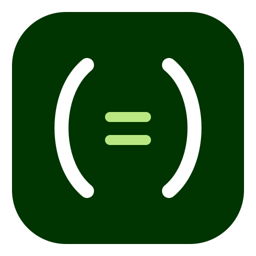
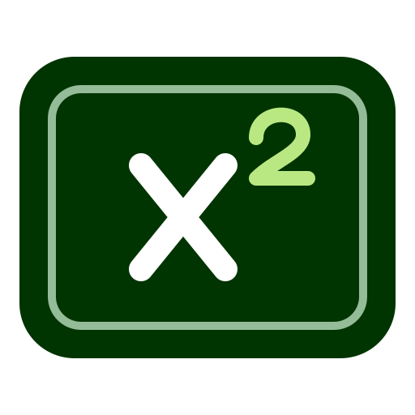
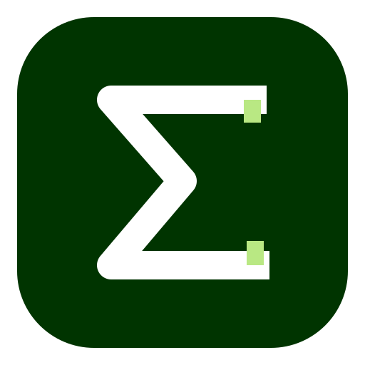

01 / Classic ƒ
現行のƒを活かす。落ち着いた深緑と広い余白。
角丸の外側は透過。SVGはInkscapeで編集可能。下段は16・24・32・48 pxでの比較です。
現行のƒを活かす。落ち着いた深緑と広い余白。

伸びる括弧と中央の点。編集する数式のまとまりを表現。

スライド枠と上付きのあるx。PowerPoint用途が伝わる案。

総和を大きく配置。小さいサイズでも数学アプリと認識しやすい。
積分記号とペン先。書体と微調整を重視するアプリ向け。